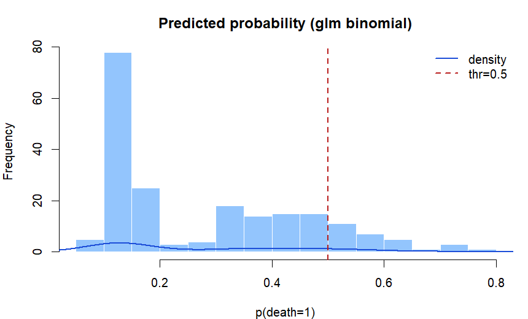

逻辑回归与分类评估（练习）
本练习使用
MASS::Melanoma，构造二分类结局并用 glm(..., family = binomial) 拟合 Logistic 回归，输出 OR 与置信区间；随后基于预测概率给出阈值分类，并计算常用指标。
0. 载入 Melanoma
0.1 载入数据
options(repos = c(CRAN = "https://mirrors.tuna.tsinghua.edu.cn/CRAN/"))
if (!requireNamespace("MASS", quietly = TRUE)) install.packages("MASS")
library(MASS)
data(Melanoma)
mel = as.data.frame(Melanoma)1. Logistic 回归与 OR
1.1 构造二分类结局
结局定义：这里把
status == 1（死于黑色素瘤）定义为 1，否则为 0，得到二分类变量 death。
Step 1 / 构造结局并查看阳性比例
mel$death = ifelse(mel$status == 1, 1, 0)
table(mel$death)
mean(mel$death)1.2 拟合与 OR/CI
Step 2 / 拟合 Logistic 回归（示例：age、thickness、ulcer、sex）
fit = glm(death ~ age + thickness + ulcer + factor(sex),
data = mel, family = binomial)
summary(fit)Step 3 / OR 与 95% CI
# 系数是 log(OR)，取 exp 得 OR
or = exp(coef(fit))
or
# 置信区间（profile CI）
or_ci = exp(confint(fit))
or_ci2. 概率、阈值与指标
2.1 预测概率
Step 4 / 预测概率并观察分布
p = predict(fit, type = "response")
summary(p)
2.2 混淆矩阵与指标
Step 5 / 设定阈值并计算混淆矩阵
thr = 0.5
pred = ifelse(p >= thr, 1, 0)
tb = table(真实 = mel$death, 预测 = pred)
tbStep 6 / 计算 accuracy、sensitivity、specificity
TP = tb["1","1"]; TN = tb["0","0"]; FP = tb["0","1"]; FN = tb["1","0"]
acc = (TP + TN) / sum(tb)
sens = TP / (TP + FN)
spec = TN / (TN + FP)
c(accuracy = acc, sensitivity = sens, specificity = spec)
注意：阈值影响灵敏度与特异度。筛查任务通常更重视灵敏度；确诊任务通常更重视特异度。
3. 实验内容（提交要求）
提交要求：按下列条目给出相应输出与简要说明。
A. Logistic 回归
- 模型输出：提交
summary(fit)的系数表（或关键行）。 - OR 解读：任选 1 个自变量（如
ulcer或thickness），给出其 OR 与 95% CI，并写 1 句话解释。
B. 评估指标
- 概率分布：提交图 1（或同类图）截图。
- 混淆矩阵与指标：提交阈值
thr=0.5下的混淆矩阵与三项指标。 - 阈值讨论：把阈值改为
0.3或0.7，重新计算指标，并用 1 句话说明变化方向（灵敏度/特异度）。